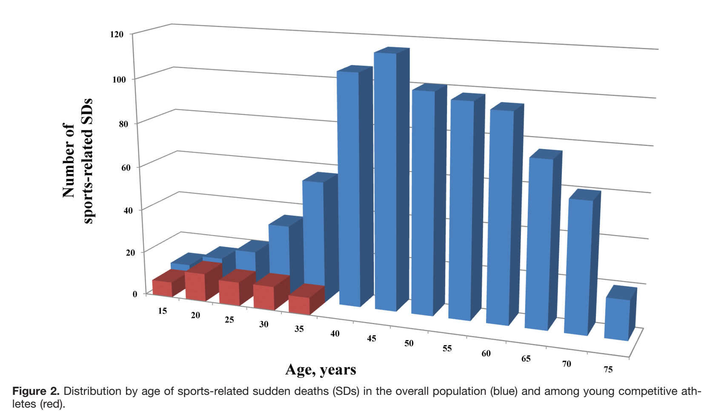

Myths|Facts #6
Heavy exercise
can lead to sudden cardiac arrest.
No Way!!!
Tell me more
Incidence of sports related SCAs
Marijon et al. Circulation 2011.
and
Patil and Magalski. ACC Expert Analysis 2015.
Sports related SCA is rare.
Much more common in men than women; ≈20:1
Majority occurred during moderate to vigorous exercise (> 4METs)
Risk is higher in those who rarely exercise.

Marijon et al. Circulation 2011.
and
Patil and Magalski. ACC Expert Analysis 2015.
HeartRhythmBox
heartRhythmBox.com
1
2
3
4
5
6
7
 heartRhythmBox.com
heartRhythmBox.com